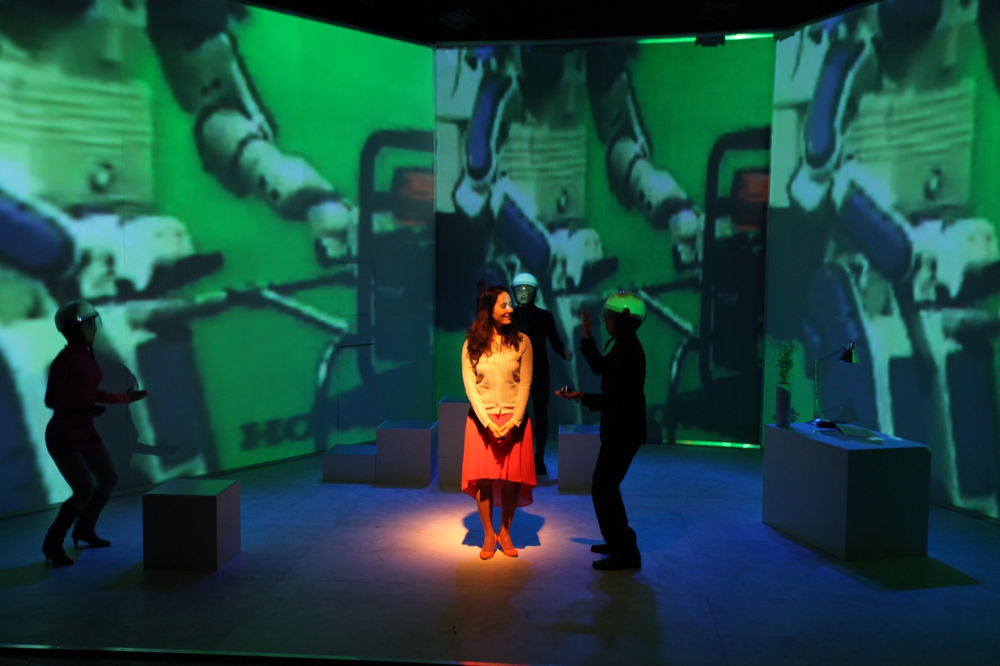
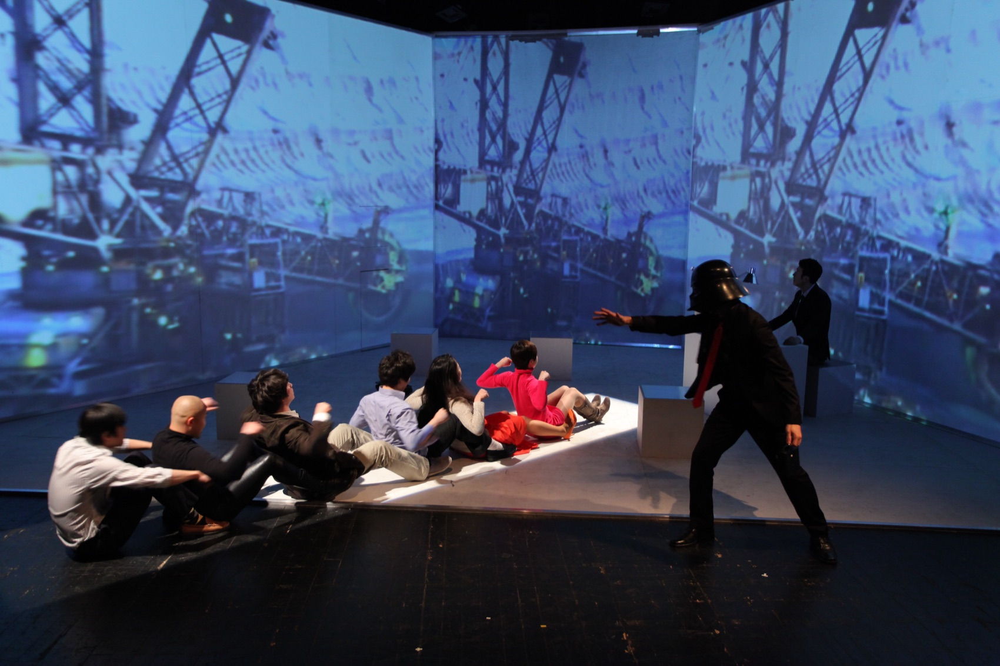
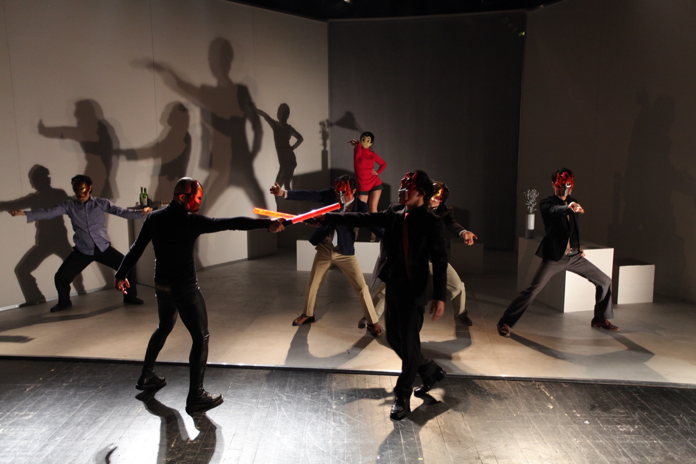
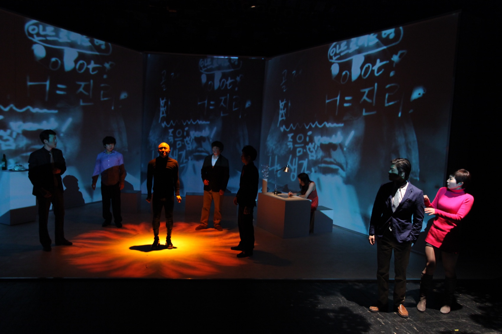
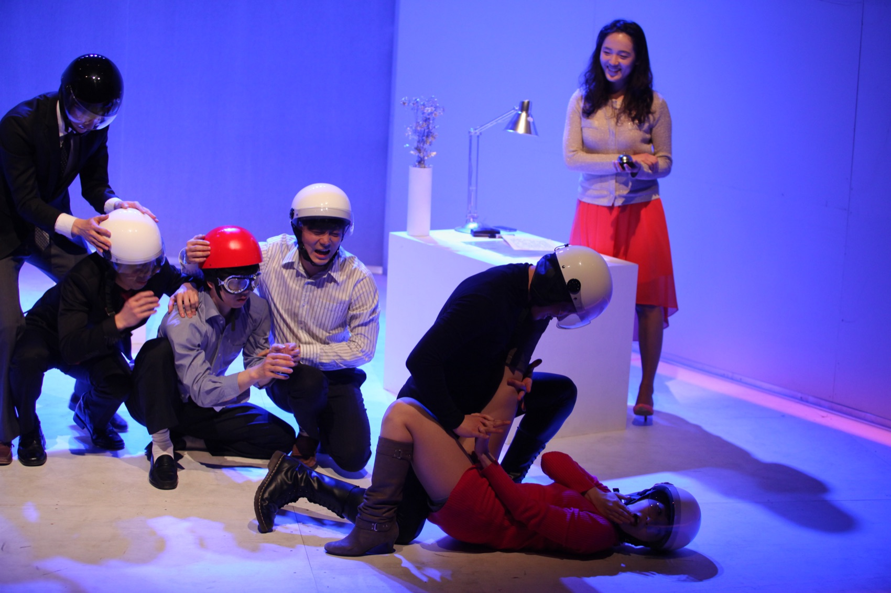

Performance — 2013
R.U.R알유알 — Rossum’s Universal Robots · 극단 거미
‘로봇’이라는 말이 태어난 100년 전의 희곡을, 공동창작과 프로젝션 맵핑으로 지금-여기의 질문으로 다시 세운 무대.
The century-old play that coined the word ‘robot,’ rebuilt as a question for the here-and-now through devising and projection mapping.
‘알유알(R.U.R.)’은 체코의 작가 카렐 차페크가 1920년에 발표한 희곡으로, ‘로봇(Robot)’이라는 용어가 처음 등장한 작품입니다. 어원은 체코어 ‘robota’ — 강제적인 노동, 고되고 지루한 일, 노예 상태를 뜻합니다. 로숨의 로봇들은 인간을 힘든 노동에서 해방시키기 위해 생산되지만, 영혼을 얻은 로봇들은 계급적 자각을 통해 혁명을 일으키고 끝내 인류를 멸망시킵니다. 100년 전에 쓰인 이 경고가 여전히 현재진행형이라는 사실은 무척 섬뜩합니다.
2013년의 ‘알유알’은 극단 거미의 공동창작 과정을 통해 원작을 동시대적 관점에서 재구성했습니다. 시연을 거치며 ‘왜, 지금, 여기인가’라는 물음으로 작업의 출발점을 다시 세웠고, 영상매체를 다뤄 온 김제민 연출은 미디어 드로잉과 프로젝션 맵핑으로 매체실험적인 무대를 만들었습니다. 흰 상자들의 무대를 로봇 팔과 공장의 이미지가 뒤덮고, 헬멧을 쓴 로봇들의 군무 위로 손으로 그린 글자들이 흘러갑니다. 아르코예술극장 소극장 공연은 서울연극제 공식참가작으로 초청되었습니다.
Karel Čapek’s 1920 play is where the word ‘robot’ first appeared — from the Czech robota: forced labour, drudgery, servitude. Rossum’s robots are built to free humanity from toil; gaining souls, they awaken to their condition, rise in revolt, and end the human race. That this hundred-year-old warning remains in the present tense is chilling. The 2013 production rebuilt the text from a contemporary standpoint through the company’s devising process, resetting its starting point around the question ‘why, now, here.’ Director Kim Jae Min, long working in media, built an experimental stage of media drawing and projection mapping: robot arms and factory imagery engulf a stage of white boxes, and hand-drawn letters stream over the drilled ensemble of helmeted robots. The Arko run was an official selection of the Seoul Theater Festival.
- 작
- Written by
- Karel Čapek
- 연출·영상
- Direction & video
- 김제민 Kim Jae Min
- 출연
- Cast
- 레지나 · 조판수 · 황도연 · 이준규 · 백종승 · 김보라 · 김동민 · 심우섭
- 멘토
- Mentor
- 김석만
- 드라마투르그
- Dramaturg
- 오민아
- 스태프
- Staff
- 음악 김병제 · 무대 봉하일 · 조명 김건영 · 안무 양은숙 · 기획 송희경
- Music Kim Byung-je · set Bong Ha-il · lighting Kim Gun-young · choreography Yang Eun-sook · producer Song Hee-kyung
- 제작
- Produced by
- 극단 거미
- Theatre Company Geomi
- 러닝타임
- Running time
- 80분
- 80 min
- 키워드
- Keywords
- Karel Čapek · robot · projection mapping · media drawing
연출의도
Director’s intent
“인간이 인간을 위해서 하고 있는 일들, 진정 인간을 위한 일인가?”
“Is what we do for humanity truly for humanity?”
카렐 차페크가 이미 약 100년 전에 던진 이 경고의 메시지가 지금도 유효하다는 사실은 참으로 섬뜩한 일입니다. 인류는 최초의 로봇상(想)에서 아시모에 이르기까지 지금 이 순간도 더 좋은 로봇을 꿈꾸고 있습니다. 어떤 의미에서 인간에게 로봇은 유토피아일지 모릅니다.
처음 피그말리온이 갈라테이아를 만들었을 때 그녀는 조각상이었습니다. 그리고 입맞춤을 통해 갈라테이아는 생명을 얻어 피그말리온의 동반자가 되었습니다. ‘우리는 로봇을 어떻게 바라볼 것인가?’ 단순히 기능적인 도구나 소유물 정도로 생각한다면, 로봇은 더 이상 인간의 유토피아도, 동반자도 될 수 없을 것입니다.
That Čapek’s hundred-year-old warning still holds is truly chilling. From the first imagined automata to ASIMO, humanity keeps dreaming of a better robot — in a sense, the robot may be our utopia. When Pygmalion first made Galatea she was a statue; through a kiss she gained life and became his companion. ‘How shall we look at the robot?’ If we see it as no more than a functional tool or a possession, the robot can be neither our utopia nor our companion.
- 이어지는 작업
- Where it led
- 여기서 던져진 피그말리온-갈라테이아의 질문은 3년 뒤 퍼포먼스 갈라테이아(2016)로, 인간-기계 공진화의 탐구는 이후의 AI 협업 작업으로 이어진다.
- The Pygmalion–Galatea question posed here carries into the performance Galatea (2016), and the inquiry into human–machine co-evolution into the later AI collaborations.
- 체코를 향해
- Toward Bohemia
- 원작의 고향 체코 무대를 위한 투어가 추진되어, 13인 팀의 공연 개요와 테크니컬 라이더(프로젝터 2대·투사거리 12M)까지 작성되었다.
- A tour to the play’s Czech homeland was planned in detail — a thirteen-person company outline and a technical rider (two projectors, a twelve-metre throw) were drawn up.
과정 — 인큐베이팅에서 서울연극제까지
Process — from incubation to the Seoul Theater Festival
두 번의 무대, 하나의 실험
Two stages, one experiment
01
공동창작 워크숍
Devising workshops
2012년 가을부터 아시모·유토피아 리서치와 공동창작 과정을 거치며 원작을 해체·재구성했다. 시연에서 ‘왜, 지금, 여기’와 드라마의 시대적 이질감에 대한 질문을 받고 출발점을 다시 세웠다.
From autumn 2012, research (ASIMO, utopia) and devising broke the text down and rebuilt it. After a showing, questions of ‘why, now, here’ reset the starting point.
02
차세대 연출가 인큐베이팅
Next-generation incubation
아르코 차세대 연출가 인큐베이팅 프로그램으로 개발되어 김석만의 멘토링을 받았고, 대학로예술극장 소극장 무대에 올랐다.
Developed through Arko’s next-generation director incubation with Kim Suk-man as mentor, and staged at the Daehakro Arts Theater small hall.
03
서울연극제 공식참가작
Official festival selection
2013년 4월 18~21일, 아르코예술극장 소극장. 서울연극제 공식참가작으로 초청되어 80분의 완성판을 올렸다.
18–21 April 2013 at the Arko small hall — invited as an official selection of the Seoul Theater Festival, the finished 80-minute version.
공연 기록 — 아르코예술극장 소극장, 2013
Performance record — Arko Arts Theater Small Hall, 2013



